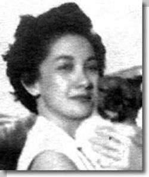

PAWS History

The Philippine Animal Welfare Society was founded in 1954 by Muriel Jay, a British educator who was then residing in the Philippines. She handpicked the first wave of members.
Nita Hontiveros, one of the younger members then, recalls that the group would make stuffed toys and other items which the members would then sell to raise funds. Other activities included a clinic to provide services to injured animals and two bicycle patrols, which pick up strays from the street.
When Muriel Jay went back to England, PAWS became less active and eventually slipped into dormancy. In 1986, Nita Hontiveros-Lichauco, the current PAWS President, reorganized PAWS with a handful of volunteers composing of veterinarians, educators and people from other professions. They became the original board of Directors.
The uncontrolled increase in human population, coupled with a steadily declining economy and, compounded further by ignorance, indifference, and cruel traditional beliefs, continue to take its toll on the welfare of both farm and companion animals. Dog-eating and other atrocities involving animals were becoming more and more rampant.
Humane education in public schools, being the main thrust of the organization, was conducted with assistance from the International Fund for Animal Welfare (IFAW), through the Brian Davies Scholarship Fund. This ten-year program granted academic scholarships to numerous children from families that were found to be kind to animals.
All during its rebirth, PAWS was already lobbying actively for a Philippine Animal Welfare Act. However, the country - from its government officials down to the general public were apparently not ready for it.
The present batch of members started joining in 1996. Many of these were from the youth sector (mostly in their 20s and 30s) and naturally, full of idealism. The young members, inspired by their President, came out with more aggressive ideas. A cattery was put up at the back of the Lichauco's residence in New Manila to serve as temporary shelter for abandoned and rescued cats. The dogs were sent to the Shangri-La Luna, a Lichauco farm in Pangasinan province, some 4 hours drive from Manila.
A revised Animal Welfare Bill was drawn up and diligently pursued by PAWS members in the Senate and in Congress. On February 11, 1998, the Animal Welfare Act of 98 (also known as Republic Act 8485) was signed into law by then Philippine President Fidel V. Ramos.
Contacts with various international animal-protection group increases. PAWS is in constant touch with organizations like the World Society for the Protection of Animals (WSPA), People for Ethical Treatment of Animals (PETA) and Humane Society International (HSI). On September 1, 1999, PAWS became an associate of the Royal SPCA of UK. Similarly, on the local scene, PAWS was made a member of the National Disaster Coordinating Council under the Department of National Defense, and participated in the rescuing of abandoned and injured animals from a residential village (Cherry Hills) devastated by landslide.
The following year, PAWS, with assistance from IFAW, conducted feeding programs for the farm animals that were displaced by the Mayon volcano eruption.
On May 2001, PAWS played host to the first Asia for Animals symposium, held in Manila. The event, the first of its kind in the Asian region, gathered more than 200 participants from 22 countries.
Philippine animal welfare society, PARC office at Katipunan
The construction of the Paws Animal Rehabilitation Center (PARC) was started in September 2000, with funding from IFAW, and the kind assistance of Don Manolo Lopez of MERALCO.
It started informal operation on July 2002, even though the existing structure was only a quarter of the entire plan. PARC now serves as a temporary refuge to countless homeless dogs and cats rescued from cruelty and neglect. It also helps facilitate the re-homing of some of these animals, through an adoption program patterned after western animal shelters.
Through an active campaign in making adoption as a first option in getting a companion animal, many people are now adopting dogs and cats from the shelter instead of buying, realizing the wisdom behind PAWS' dictum that "good friends need not be bought”.
The shelter clinic offers low-cost neutering of dogs and cats to the public. One of the urgent priorities of PARC is to sustain its neutering program in order to curb the overpopulation of unwanted animals.
With the visibility of PARC, PAWS aims to enhance the Filipino's awareness and interest in animal welfare. Schools too are making field trips to the shelter, presenting humane educators the opportunity to teach these young minds on the importance of showing compassion and developing an empathic attitude towards all animals.